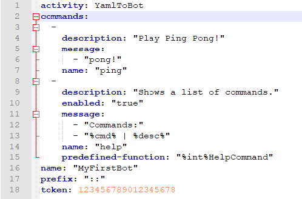

What is YamlToBot?
YamlToBot is an application that allows you to host your own chat bot for Discord or Twitch. You are able to customize your bot with a wide range of commands through a simple configuration file, or you could even make your own custom scripts to run!

Configure,

Run,